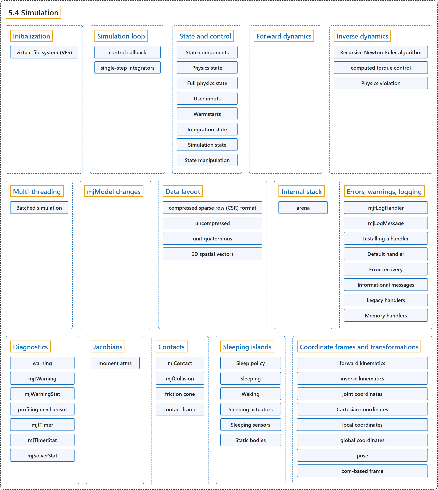

5.4 Simulation
Classification

Glossary
| Term | Definition | 中文翻译 | Source |
|---|---|---|---|
| 5.4 Simulation 仿真 |
(No definition) | （无定义） | Google DeepMind, n.d., "Simulation" |
| Initialization 初始化 |
(context) "mjModel and mjData should never be allocated directly by the user. Instead they are allocated and initialized by the corresponding API functions." | （语境）mjModel 和 mjData 绝不应由用户直接分配，而是由相应的 API 函数分配和初始化。 | Google DeepMind, n.d., "Initialization", para. 1 |
| virtual file system (VFS) 虚拟文件系统（VFS） |
"The virtual file system (VFS) allows disk resources to be loaded in memory or created programmatically by the user, and then MuJoCo’s load functions search for files in the VFS before accessing the disk." | 虚拟文件系统（VFS）允许把磁盘资源加载到内存中，或由用户以编程方式创建，然后 MuJoCo 的加载函数会先在 VFS 中查找文件，再访问磁盘。 | Google DeepMind, n.d., "Initialization", para. 4 |
| Simulation loop 仿真循环 |
(context) "There are multiple ways to run a simulation loop in MuJoCo. The simplest way is to call the top-level simulation function mj_step in a loop such as" | （语境）在 MuJoCo 中运行仿真循环有多种方式。最简单的方式是在循环中调用顶层仿真函数 mj_step，例如 | Google DeepMind, n.d., "Simulation loop", para. 1 |
| control callback 控制回调 |
(context) "The default way to control the system is to implement a control callback, for example" | （语境）控制系统的默认方式是实现一个控制回调，例如 | Google DeepMind, n.d., "Simulation loop", para. 2 |
| single-step integrators 单步积分器 |
(context) "There is one complication however: this only works with the single-step integrators (Euler, implicit, implicitfast)." | （语境）不过有一个复杂之处：这只适用于单步积分器（Euler、implicit、implicitfast）。 | Google DeepMind, n.d., "Simulation loop", para. 8 |
| State and control 状态与控制 |
"MuJoCo has a well-defined state that is easy to set, reset and advance through time." | MuJoCo 有一个定义明确、易于设置、重置并随时间推进的状态。 | Google DeepMind, n.d., "State and control", para. 1 |
| State components 状态组成部分 |
"The state is composed of distinct components, described in the mjtState bitfield enum, which enumerates both individual components and combinations of components." | 状态由不同的组成部分构成，它们在 mjtState 位域枚举中描述，该枚举既列出单个组成部分，也列出组成部分的组合。 | Google DeepMind, n.d., "State components", para. 1 |
| mjtState 状态枚举 mjtState |
"The state is composed of distinct components, described in the mjtState bitfield enum, which enumerates both individual components and combinations of components." | 状态由不同的组成部分构成，它们在 mjtState 位域枚举中描述，该枚举既列出单个组成部分，也列出组成部分的组合。 | Google DeepMind, n.d., "State components", para. 1 |
| Physics state 物理状态 |
"The physics state (mjSTATE_PHYSICS) contains the main quantities which are time-integrated during stepping." | 物理状态（mjSTATE_PHYSICS）包含在步进过程中进行时间积分的主要量。 | Google DeepMind, n.d., "Physics state", para. 1 |
| Position: qpos 位置 qpos |
"The configuration in generalized coordinates" | 广义坐标下的位形 | Google DeepMind, n.d., "Physics state", item 1 |
| Velocity: qvel 速度 qvel |
"The generalized velocities" | 广义速度 | Google DeepMind, n.d., "Physics state", item 2 |
| Actuator activation: act 执行器激活 act |
"For a second-order mechanical system, the state contains only position and velocity, but MuJoCo also models stateful actuators (such as biological muscles) that have their own activation states assembled in mjData.act" | 对二阶机械系统而言，状态只包含位置和速度，但 MuJoCo 还对有状态的执行器（如生物肌肉）建模，它们有自己的激活状态，汇集在 mjData.act 中 | Google DeepMind, n.d., "Physics state", item 3 |
| History buffer: history 历史缓冲区 history |
"When actuators or sensors have a positive nsample attribute (actuators, sensors), this buffer stores timestamped samples of previous control or sensor values." | 当执行器或传感器的 nsample 属性为正时（执行器、传感器），这个缓冲区存储以前的控制值或传感器值的带时间戳样本。 | Google DeepMind, n.d., "Physics state", item 4 |
| Full physics state 完整物理状态 |
"t, x above correspond to the full physics state (mjSTATE_FULLPHYSICS) – everything which advances in time." | 上面的 t、x 对应完整物理状态（mjSTATE_FULLPHYSICS），即一切随时间推进的量。 | Google DeepMind, n.d., "Full physics state", para. 1 |
| Time: time 时间 time |
"The time t (mjData.time) is therefore a state component with dt/dt == 1." | 因此时间 t（mjData.time）是一个满足 dt/dt == 1 的状态组成部分。 | Google DeepMind, n.d., "Full physics state", item 1 |
| Plugin state: plugin_state 插件状态 plugin_state |
"mjData.plugin_state are states declared by engine plugins." | mjData.plugin_state 是由引擎插件声明的状态。 | Google DeepMind, n.d., "Full physics state", item 2 |
| User inputs 用户输入 |
"These input fields (mjSTATE_USER) are set by the user and affect the physics simulation, but are untouched by the simulator." | 这些输入字段（mjSTATE_USER）由用户设置并影响物理仿真，但仿真器不会改动它们。 | Google DeepMind, n.d., "User inputs", para. 1 |
| Control: ctrl 控制 ctrl |
"The control vector u mostly corresponds to the array mjData.ctrl, containing the actuation signal set by the user." | 控制向量 u 主要对应数组 mjData.ctrl，其中包含用户设置的驱动信号。 | Google DeepMind, n.d., "User inputs", para. 2 |
| Auxiliary Controls: qfrc_applied and xfrc_applied 辅助控制 qfrc_applied 和 xfrc_applied |
"mjData.qfrc_applied are directly applied generalized forces.mjData.xfrc_applied are Cartesian wrenches applied to the CoM of individual bodies." | mjData.qfrc_applied 是直接施加的广义力。mjData.xfrc_applied 是施加在各个刚体质心上的笛卡尔力旋量。 | Google DeepMind, n.d., "User inputs", item 2 |
| MoCap poses: mocap_pos and mocap_quat 动捕位姿 mocap_pos 和 mocap_quat |
"mjData.mocap_pos and mjData.mocap_quat are special optional kinematic states described here, which allow the user to set the positions and orientations of static bodies in real-time, for example when streaming 6D poses from a motion-capture device." | mjData.mocap_pos 和 mjData.mocap_quat 是特殊的可选运动学状态（见此处说明），允许用户实时设置静态刚体的位置和朝向，例如从动作捕捉设备流式传入 6D 位姿时。 | Google DeepMind, n.d., "User inputs", item 3 |
| Equality constraint toggle: eq_active 等式约束开关 eq_active |
"mjData.eq_active is a byte-valued array that allows the user to toggle the state of equality constraints at runtime." | mjData.eq_active 是一个字节值数组，允许用户在运行时切换等式约束的状态。 | Google DeepMind, n.d., "User inputs", item 4 |
| User data: userdata 用户数据 userdata |
"mjData.userdata acts as a user-defined memory space untouched by the engine." | mjData.userdata 充当引擎不会改动的用户自定义内存空间。 | Google DeepMind, n.d., "User inputs", item 5 |
| Warmstarts 热启动 |
(No definition) | （无定义） | Google DeepMind, n.d., "Warmstarts" |
| Warmstart accelerations: qacc_warmstart 热启动加速度 qacc_warmstart |
"mjData.qacc_warmstart are the previous step’s accelerations used to warmstart the constraint solver." | mjData.qacc_warmstart 是上一步的加速度，用于热启动约束求解器。 | Google DeepMind, n.d., "Warmstarts", item 1 |
| Integration state 积分状态 |
"The integration state (mjSTATE_INTEGRATION) is the union of all the above mjData fields and constitutes the entire set of inputs to the forward dynamics." | 积分状态（mjSTATE_INTEGRATION）是以上所有 mjData 字段的并集，构成正向动力学的全部输入。 | Google DeepMind, n.d., "Integration state", para. 1 |
| Simulation state 仿真状态 |
"The simulation state is the entirety of the mjData struct and associated memory buffer." | 仿真状态是整个 mjData 结构体及其关联的内存缓冲区。 | Google DeepMind, n.d., "Simulation state", para. 1 |
| State manipulation 状态操作 |
(context) "Manipulation of the state is facilitated by the mjtState bitfield enum, which enumerates the state components documented above." | （语境）状态操作借助 mjtState 位域枚举来实现，该枚举列出了上面介绍的各个状态组成部分。 | Google DeepMind, n.d., "State manipulation", para. 1 |
| Forward dynamics 正向动力学 |
"The goal of forward dynamics is to compute the time-derivative of the state, namely the acceleration vector mjData.qacc and the activation time-derivative mjData.act_dot." | 正向动力学的目标是计算状态的时间导数，即加速度向量 mjData.qacc 和激活量的时间导数 mjData.act_dot。 | Google DeepMind, n.d., "Forward dynamics", para. 1 |
| Inverse dynamics 逆向动力学 |
(context) "The computation of inverse dynamics is a unique feature of MuJoCo, and is not found in any other modern engine capable of simulating contacts." | （语境）逆向动力学的计算是 MuJoCo 的一项独有功能，在其他任何能模拟接触的现代引擎中都没有。 | Google DeepMind, n.d., "Inverse dynamics", para. 1 |
| Recursive Newton-Euler algorithm 递归牛顿-欧拉算法 |
(context) "The result mjData.qfrc_inverse is obtained by using the Recursive Newton-Euler algorithm to compute the net force acting on the system, and then subtracting from it all internal forces." | （语境）结果 mjData.qfrc_inverse 是这样得到的：用递归牛顿-欧拉算法计算作用在系统上的合力，再从中减去所有内力。 | Google DeepMind, n.d., "Inverse dynamics", para. 5 |
| computed torque control 计算力矩控制 |
"It can also be used to compute the joint torques needed to drive the system along a given reference trajectory; this is known as computed torque control." | 它还可以用来计算沿给定参考轨迹驱动系统所需的关节力矩，这称为计算力矩控制。 | Google DeepMind, n.d., "Inverse dynamics", para. 6 |
| Physics violation 物理违背 |
"Physics violation can be quantified as the norm of any unexplained external force computed by inverse dynamics." | 物理违背可以量化为逆向动力学计算出的任何无法解释的外力的范数。 | Google DeepMind, n.d., "Inverse dynamics", para. 6 |
| Multi-threading 多线程 |
"MuJoCo has support for within-step multi-threading." | MuJoCo 支持步内多线程。 | Google DeepMind, n.d., "Multi-threading", para. 1 |
| Batched simulation 批量仿真 |
"The batch API in mujoco/mjbatch.h packages this multi-threading scheme." | mujoco/mjbatch.h 中的批量 API 封装了这种多线程方案。 | Google DeepMind, n.d., "Batched simulation", para. 1 |
| mjBatch 批量结构体 mjBatch |
"An mjBatch holds nsim simulations of one model and runs them on a thread pool of its own." | 一个 mjBatch 保存同一模型的 nsim 个仿真，并在自己的线程池上运行它们。 | Google DeepMind, n.d., "Batched simulation", para. 1 |
| State rows 状态行 |
"The batch keeps these states in a table returned by mjb_state, an nsim x nstate array whose row i is simulation i’s state, where nstate is mjb_nstate." | 批量对象把这些状态保存在 mjb_state 返回的表中，这是一个 nsim x nstate 数组，其第 i 行是第 i 个仿真的状态，其中 nstate 是 mjb_nstate。 | Google DeepMind, n.d., "Batched simulation", para. 2 |
| Calls 调用 |
"A call such as mjb_step runs on the simulations selected by ids, or on all of them." | 像 mjb_step 这样的调用在由 ids 选中的仿真上运行，或在全部仿真上运行。 | Google DeepMind, n.d., "Batched simulation", para. 3 |
| Outputs 输出 |
"mjb_output registers an mjData field as an output: after every call, the batch copies it out of each simulation’s mjData into an nsim x size array that the batch owns." | mjb_output 把一个 mjData 字段注册为输出：每次调用之后，批量对象把它从各个仿真的 mjData 中复制到自己拥有的 nsim x size 数组里。 | Google DeepMind, n.d., "Batched simulation", para. 4 |
| Shared and persistent mjData 共享与持久的 mjData |
"By default, a batch keeps one mjData per thread, which each thread reuses for the simulations it runs, so memory scales with threads rather than simulations." | 默认情况下，批量对象为每个线程保留一个 mjData，每个线程在它运行的各个仿真之间复用它，因此内存随线程数而不是仿真数增长。 | Google DeepMind, n.d., "Batched simulation", para. 5 |
| Stages 阶段 |
"To observe the new state, the calls that step or reset take a stage argument (an mjtStage): when the call is done, the batch runs the stages of mj_forward up to stage at the new state." | 为了观察新状态，步进或重置的调用接受一个 stage 参数（一个 mjtStage）：调用完成时，批量对象在新状态上运行 mj_forward 直到 stage 为止的各个阶段。 | Google DeepMind, n.d., "Batched simulation", para. 6 |
| Continuation 续接 |
"In a persistent batch, the simulation’s mjData still holds those stages at the next call, so the next step skips them and continues with mj_step2, and fresh observations cost nothing extra." | 在持久批量中，下一次调用时该仿真的 mjData 仍保有这些阶段，因此下一步跳过它们，直接续接 mj_step2，新的观测不需要额外开销。 | Google DeepMind, n.d., "Batched simulation", para. 7 |
| Per-simulation models 逐仿真模型 |
"To give simulations different model or option values, for example to randomize masses, friction or gravity, mjb_expand expands a field." | 为了给各个仿真不同的模型值或选项值，例如随机化质量、摩擦或重力，mjb_expand 会扩展一个字段。 | Google DeepMind, n.d., "Batched simulation", para. 8 |
| Trajectories and queries 轨迹与查询 |
"mjb_rollout records open-loop trajectories: it applies a given control sequence and records chosen states or fields after every substep." | mjb_rollout 记录开环轨迹：它施加给定的控制序列，并在每个子步之后记录选定的状态或字段。 | Google DeepMind, n.d., "Batched simulation", para. 9 |
| Threads and callbacks 线程与回调 |
"The batch’s threads run across simulations, while those of mju_threadpool run within one simulation." | 批量对象的线程跨仿真运行，而 mju_threadpool 的线程在一个仿真内部运行。 | Google DeepMind, n.d., "Batched simulation", para. 10 |
| mjModel changes mjModel 修改 |
(context) "The general rule is that real-valued parameters are safe to change, while structural integer parameters are not because that may result in incorrect sizes or indexing." | （语境）一般规则是：实数值参数可以安全修改，而结构性的整数参数不行，因为那可能导致大小或索引出错。 | Google DeepMind, n.d., "mjModel changes", para. 1 |
| Data layout 数据布局 |
"All matrices in MuJoCo are in row-major format." | MuJoCo 中的所有矩阵都采用行主序格式。 | Google DeepMind, n.d., "Data layout", para. 1 |
| compressed sparse row (CSR) format 压缩稀疏行（CSR）格式 |
(context) "Sparse matrices are stored in the compressed sparse row (CSR) format." | （语境）稀疏矩阵以压缩稀疏行（CSR）格式存储。 | Google DeepMind, n.d., "Data layout", para. 4 |
| uncompressed 非压缩稀疏布局 |
"Furthermore, in operations that can change the sparsity pattern, it is more efficient to spread out the data so that we do not have to perform many memory moves when inserting new data. We call this sparse layout “uncompressed”." | 此外，在可能改变稀疏模式的运算中，把数据分散存放，使插入新数据时不必做大量内存移动会更高效。我们把这种稀疏布局称为“非压缩”布局。 | Google DeepMind, n.d., "Data layout", para. 5 |
| unit quaternions 单位四元数 |
"To represent 3D orientations and rotations, MuJoCo uses unit quaternions – namely 4D unit vectors arranged as q = (w, x, y, z)." | 为了表示三维朝向和旋转，MuJoCo 使用单位四元数，即按 q = (w, x, y, z) 排列的四维单位向量。 | Google DeepMind, n.d., "Data layout", para. 6 |
| 6D spatial vectors 6D 空间向量 |
"MuJoCo also uses 6D spatial vectors internally. These are quantities in mjData prefixed with ‘c’, namely cvel, cacc, cdot, etc. They are spatial motion and force vectors that combine a 3D rotational component followed by a 3D translational component." | MuJoCo 内部还使用 6D 空间向量。它们是 mjData 中以 ‘c’ 为前缀的量，即 cvel、cacc、cdot 等。它们是空间运动向量和空间力向量，由一个三维转动分量接一个三维平移分量组成。 | Google DeepMind, n.d., "Data layout", para. 7 |
| Internal stack 内部栈 |
"Most top-level MuJoCo functions allocate space on the mjData stack, use it for internal computations, and then deallocate it." | 大多数顶层 MuJoCo 函数在 mjData 栈上分配空间，用于内部计算，然后再释放。 | Google DeepMind, n.d., "Internal stack", para. 3 |
| arena arena 内存区 |
"MuJoCo allocates and manages dynamic memory in an “arena” space in mjData.arena." | MuJoCo 在 mjData.arena 中以“arena”空间分配和管理动态内存。 | Google DeepMind, n.d., "Internal stack", para. 1 |
| Errors, warnings, logging 错误、警告与日志 |
"MuJoCo has a unified logging system for errors, warnings and informational messages." | MuJoCo 有一个统一的日志系统，用于错误、警告和信息性消息。 | Google DeepMind, n.d., "Errors, warnings, logging", para. 1 |
| mjfLogHandler 日志处理器类型 mjfLogHandler |
"All log output is routed through a single callback of type mjfLogHandler, which receives a structured mjLogMessage containing the severity level, message text, and optional source location." | 所有日志输出都经由一个 mjfLogHandler 类型的回调传递，它接收一个结构化的 mjLogMessage，其中包含严重级别、消息文本和可选的源代码位置。 | Google DeepMind, n.d., "Errors, warnings, logging", para. 1 |
| mjLogMessage 日志消息结构体 mjLogMessage |
"All log output is routed through a single callback of type mjfLogHandler, which receives a structured mjLogMessage containing the severity level, message text, and optional source location." | 所有日志输出都经由一个 mjfLogHandler 类型的回调传递，它接收一个结构化的 mjLogMessage，其中包含严重级别、消息文本和可选的源代码位置。 | Google DeepMind, n.d., "Errors, warnings, logging", para. 1 |
| Installing a handler 安装处理器 |
(context) "Users who want to intercept and process MuJoCo’s log output should install a log handler using mju_setLogHandler." | （语境）想要截获并处理 MuJoCo 日志输出的用户应当用 mju_setLogHandler 安装一个日志处理器。 | Google DeepMind, n.d., "Installing a handler", para. 1 |
| Save/restore 保存与恢复 |
"A library or subsystem can temporarily install its own handler and later restore the previous one." | 库或子系统可以临时安装自己的处理器，之后再恢复先前的处理器。 | Google DeepMind, n.d., "Installing a handler", item 1 |
| Chaining 链式调用 |
"A custom handler can act as a pure observer by calling the previous handler at the end of its callback to preserve existing behavior." | 自定义处理器可以充当纯观察者，做法是在其回调末尾调用先前的处理器，以保留原有行为。 | Google DeepMind, n.d., "Installing a handler", item 2 |
| Default handler 默认处理器 |
(context) "If no custom handler is installed (or if NULL is passed to mju_setLogHandler), MuJoCo uses a default handler that provides the following behavior:" | （语境）如果没有安装自定义处理器（或向 mju_setLogHandler 传入 NULL），MuJoCo 使用一个默认处理器，其行为如下： | Google DeepMind, n.d., "Default handler", para. 1 |
| Error recovery 错误恢复 |
(context) "One situation where it is desirable to continue even after an error is an interactive simulator that fails to load a model file." | （语境）需要在出错后仍然继续运行的一种情形，是交互式仿真器加载模型文件失败。 | Google DeepMind, n.d., "Error recovery", para. 1 |
| Informational messages 信息性消息 |
"MuJoCo provides two levels of opt-in diagnostic logging: informational messages (mjLOG_INFO) and debug traces (mjLOG_DEBUG)." | MuJoCo 提供两个级别的可选诊断日志：信息性消息（mjLOG_INFO）和调试跟踪（mjLOG_DEBUG）。 | Google DeepMind, n.d., "Informational messages", para. 1 |
| mjtLogTopic 日志主题枚举 mjtLogTopic |
(context) "Both use topic identifiers from the mjtLogTopic enum, but have a subtle architectural distinction in how filtering is applied:" | （语境）两者都使用来自 mjtLogTopic 枚举的主题标识符，但在如何过滤上有细微的架构差别： | Google DeepMind, n.d., "Informational messages", para. 1 |
| INFO messages INFO 消息 |
"Emitted unconditionally by the engine. Filtering happens on the consumer side inside the default handler." | 由引擎无条件发出。过滤发生在默认处理器内部的消费者一侧。 | Google DeepMind, n.d., "Informational messages", item 1 |
| DEBUG messages DEBUG 消息 |
"Designed for tight, high-frequency simulation loops where constructing strings would be a performance bottleneck. Therefore, filtering happens on the producer side." | 为紧凑的高频仿真循环设计，在这种循环中构造字符串会成为性能瓶颈。因此，过滤发生在生产者一侧。 | Google DeepMind, n.d., "Informational messages", item 2 |
| Legacy handlers 旧版处理器 |
(context) "The global function pointers mju_user_error and mju_user_warning are still supported for backward compatibility, but are deprecated in favor of mju_setLogHandler." | （语境）全局函数指针 mju_user_error 和 mju_user_warning 为向后兼容仍受支持，但已被弃用，改用 mju_setLogHandler。 | Google DeepMind, n.d., "Legacy handlers", para. 1 |
| Memory handlers 内存处理器 |
(context) "When MuJoCo allocates and frees memory on the heap, it always uses the functions mju_malloc and mju_free." | （语境）MuJoCo 在堆上分配和释放内存时，总是使用函数 mju_malloc 和 mju_free。 | Google DeepMind, n.d., "Memory handlers", para. 1 |
| Diagnostics 诊断 |
"MuJoCo has several built-in diagnostics mechanisms that can be used to fine-tune the model." | MuJoCo 有若干内置诊断机制，可用于微调模型。 | Google DeepMind, n.d., "Diagnostics", para. 1 |
| warning 警告 |
"When the simulator encounters a situation that is not a terminal error but is nevertheless suspicious and likely to result in inaccurate numerical results, it triggers a warning." | 当仿真器遇到并非致命错误、但可疑且很可能导致数值结果不准确的情形时，它会触发一个警告。 | Google DeepMind, n.d., "Diagnostics", para. 2 |
| mjtWarning 警告枚举 mjtWarning |
(context) "There are several possible warning types, indexed by the enum type mjtWarning." | （语境）可能的警告类型有好几种，由枚举类型 mjtWarning 索引。 | Google DeepMind, n.d., "Diagnostics", para. 2 |
| mjWarningStat 警告统计结构体 mjWarningStat |
"The array mjData.warning contains one mjWarningStat data structure per warning type, indicating how many times each warning type has been triggered since the last reset and any information about the warning (usually the index of the problematic model element)." | 数组 mjData.warning 中每种警告类型对应一个 mjWarningStat 数据结构，表示自上次重置以来每种警告被触发的次数以及关于该警告的信息（通常是出问题的模型元素的索引）。 | Google DeepMind, n.d., "Diagnostics", para. 2 |
| profiling mechanism 性能剖析机制 |
(context) "MuJoCo provides an extensive profiling mechanism." | （语境）MuJoCo 提供一套全面的性能剖析机制。 | Google DeepMind, n.d., "Diagnostics", para. 3 |
| mjtTimer 计时器枚举 mjtTimer |
(context) "It involves multiple timers indexed by the enum type mjtTimer." | （语境）它包含由枚举类型 mjtTimer 索引的多个计时器。 | Google DeepMind, n.d., "Diagnostics", para. 3 |
| mjTimerStat 计时统计结构体 mjTimerStat |
"The array mjData.timer contains one mjTimerStat data structure per timer." | 数组 mjData.timer 中每个计时器对应一个 mjTimerStat 数据结构。 | Google DeepMind, n.d., "Diagnostics", para. 3 |
| mjSolverStat 求解器统计结构体 mjSolverStat |
"The array mjData.solver contains one mjSolverStat data structure per iteration of the constraint solver, with information about the constraint state and line search." | 数组 mjData.solver 中约束求解器的每次迭代对应一个 mjSolverStat 数据结构，包含关于约束状态和线搜索的信息。 | Google DeepMind, n.d., "Diagnostics", para. 5 |
| Jacobians 雅可比矩阵 |
"The derivative of any vector function with respect to its vector argument is called Jacobian." | 任意向量函数对其向量自变量的导数称为雅可比矩阵。 | Google DeepMind, n.d., "Jacobians", para. 1 |
| moment arms 力臂 |
"In the case of tendons and actuator transmissions the corresponding quantities are mjData.ten_moment and mjData.actuator_moment; we call them moment arms but mathematically they are Jacobians." | 对于肌腱和执行器传动，相应的量是 mjData.ten_moment 和 mjData.actuator_moment；我们称之为力臂，但在数学上它们是雅可比矩阵。 | Google DeepMind, n.d., "Jacobians", para. 2 |
| Contacts 接触 |
(context) "Here we further clarify contact processing from a programming perspective." | （语境）这里进一步从编程的角度说明接触处理。 | Google DeepMind, n.d., "Contacts", para. 1 |
| mjContact 接触结构体 mjContact |
(context) "The collision detection stage finds contacts between geoms, and records them in the array mjData.contact of mjContact data structures." | （语境）碰撞检测阶段找出 geom 之间的接触，并把它们记录在由 mjContact 数据结构组成的数组 mjData.contact 中。 | Google DeepMind, n.d., "Contacts", para. 2 |
| mjfCollision 碰撞函数类型 mjfCollision |
(context) "The collision function type is mjfCollision." | （语境）碰撞函数的类型是 mjfCollision。 | Google DeepMind, n.d., "Contacts", para. 3 |
| friction cone 摩擦锥 |
(context) "Keep in mind that the contact friction cone can be pyramidal or elliptic, depending on which solver is selected in mjModel.opt." | （语境）请记住，接触摩擦锥可以是棱锥形或椭圆形，取决于 mjModel.opt 中选择了哪种求解器。 | Google DeepMind, n.d., "Contacts", para. 4 |
| contact frame 接触坐标系 |
(context) "This force and torque are expressed in the contact frame given by mjContact.frame." | （语境）这个力和力矩表示在由 mjContact.frame 给出的接触坐标系中。 | Google DeepMind, n.d., "Contacts", para. 4 |
| Sleeping islands 休眠岛 |
"If all trees in an island are ready to sleep, they are put to sleep during state advancement and their associated values in tree_asleep are set to a (non-negative) index cycle: the “sleeping island”." | 如果一个岛中的所有树都已准备好休眠，它们就会在状态推进时进入休眠，其在 tree_asleep 中的对应值被设为一个（非负的）索引环，即“休眠岛”。 | Google DeepMind, n.d., "Sleeping islands", para. 2 |
| Sleep policy 休眠策略 |
"The ability of a kinematic tree to sleep is governed by a policy determined at model compile time." | 运动学树能否休眠由模型编译时确定的策略决定。 | Google DeepMind, n.d., "Sleep policy", para. 1 |
| Sleeping 进入休眠 |
(context) "Sleeping can happen in one of two ways:" | （语境）进入休眠有两种方式： | Google DeepMind, n.d., "Sleeping", para. 1 |
| Automatic 自动休眠 |
"The velocity threshold described above is w.r.t. the infinity norm (largest absolute value) of all velocities associated with an island." | 上面所说的速度阈值针对的是与岛相关的所有速度的无穷范数（最大绝对值）。 | Google DeepMind, n.d., "Sleeping", item 1 |
| Initialized asleep 初始即休眠 |
"By setting the body/sleep attribute of a tree root to “init”, it is marked as “initialized asleep” and put to sleep during mjData initialization." | 把树根的 body/sleep 属性设为“init”，它就被标记为“初始即休眠”，并在 mjData 初始化时进入休眠。 | Google DeepMind, n.d., "Sleeping", item 2 |
| Waking 唤醒 |
"Waking happens at the beginning of the timestep, either during mj_kinematics or soon thereafter during the position stage of the simulation pipeline." | 唤醒发生在时间步的开始，要么在 mj_kinematics 期间，要么紧随其后在仿真流水线的位置阶段。 | Google DeepMind, n.d., "Waking", para. 1 |
| Sleeping actuators 休眠的执行器 |
"As explained in the body/sleep documentation, trees with actuators are by default not allowed to sleep, but this can be overridden by the user." | 如 body/sleep 文档所述，带执行器的树默认不允许休眠，但用户可以覆盖这一设置。 | Google DeepMind, n.d., "Notes", item 1 |
| Sleeping sensors 休眠的传感器 |
"For most sensors, we can skip the computation of their values when their associated objects are asleep, reporting the value that was computed when those objects were last awake." | 对大多数传感器，当其关联对象处于休眠时可以跳过其值的计算，而报告这些对象上次醒着时计算出的值。 | Google DeepMind, n.d., "Notes", item 2 |
| Static bodies 静态刚体 |
"Besides the main optimization of allowing kinematic trees to sleep, the sleep feature also includes another, related optimization: the skipping of computation related to static bodies." | 除了允许运动学树休眠这一主要优化之外，休眠功能还包含另一项相关的优化：跳过与静态刚体有关的计算。 | Google DeepMind, n.d., "Notes", item 4 |
| Coordinate frames and transformations 坐标系与变换 |
(context) "There are multiple coordinate frames used in MuJoCo." | （语境）MuJoCo 中使用多种坐标系。 | Google DeepMind, n.d., "Coordinate frames and transformations", para. 1 |
| forward kinematics 正向运动学 |
"The mapping from the vector of joints coordinates to the Cartesian positions and orientations of all bodies is called forward kinematics and is the first step in the physics pipeline." | 从关节坐标向量到所有刚体的笛卡尔位置和朝向的映射称为正向运动学，它是物理流水线的第一步。 | Google DeepMind, n.d., "Coordinate frames and transformations", para. 1 |
| inverse kinematics 逆向运动学 |
"The opposite mapping is called inverse kinematics but it is not uniquely defined and is not implemented in MuJoCo." | 相反方向的映射称为逆向运动学，但它的定义不唯一，MuJoCo 中没有实现。 | Google DeepMind, n.d., "Coordinate frames and transformations", para. 1 |
| joint coordinates 关节坐标 |
(context) "In joint coordinates, the only complication is that the position vector mjData.qpos has different dimensionality than the velocity and acceleration vectors mjData.qvel and mjData.qacc due to quaternion joints." | （语境）在关节坐标中，唯一的复杂之处是：由于四元数关节，位置向量 mjData.qpos 与速度和加速度向量的维数不同（mjData.qvel 和 mjData.qacc）。 | Google DeepMind, n.d., "Coordinate frames and transformations", para. 2 |
| Cartesian coordinates 笛卡尔坐标 |
"Cartesian coordinates are more complicated because there are three different coordinate frames that we use: local, global, and com-based." | 笛卡尔坐标更复杂，因为我们使用三种不同的坐标系：局部坐标系、全局坐标系和基于质心的坐标系。 | Google DeepMind, n.d., "Coordinate frames and transformations", para. 3 |
| local coordinates 局部坐标 |
"Local coordinates are used in mjModel to represent the static offsets between a parent and a child body, as well as the static offsets between a body and any geoms, sites, cameras and lights attached to it." | 局部坐标在 mjModel 中用来表示父刚体与子刚体之间的静态偏移，以及刚体与附着其上的 geom、site、相机和灯光之间的静态偏移。 | Google DeepMind, n.d., "Coordinate frames and transformations", para. 3 |
| global coordinates 全局坐标 |
(context) "The job of forward kinematics is to accumulate the joint transformations and static offsets along the kinematic tree and compute all positions and orientations in global coordinates." | （语境）正向运动学的任务是沿运动学树累积关节变换和静态偏移，并在全局坐标中计算所有位置和朝向。 | Google DeepMind, n.d., "Coordinate frames and transformations", para. 3 |
| pose 位姿 |
"A pose is a grouping of a 3D position and a unit quaternion orientation." | 位姿是一个三维位置与一个单位四元数朝向的组合。 | Google DeepMind, n.d., "Coordinate frames and transformations", para. 4 |
| com-based frame 基于质心的坐标系 |
"Finally, there is the com-based frame. This is used to represent 6D spatial vectors containing a 3D angular velocity or acceleration or torque, followed by a 3D linear velocity or acceleration or force." | 最后是基于质心的坐标系。它用来表示 6D 空间向量，其中先是三维角速度、角加速度或力矩，后接三维线速度、线加速度或力。 | Google DeepMind, n.d., "Coordinate frames and transformations", para. 5 |
References
Google DeepMind. (n.d.). Simulation. MuJoCo Documentation (Version 3.17.0). Retrieved October 31, 2026, from https://mujoco.readthedocs.io/en/stable/programming/simulation.html